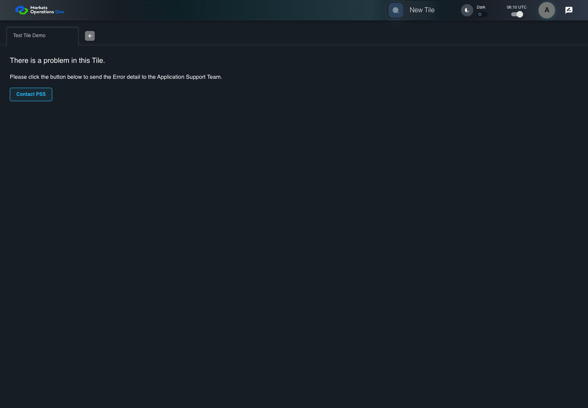

UX-041 actual support email link
FAIL · application/run-050/ux-041-actual-support-email-link-e356926336fd-attempt-1 · ACTUAL_APPLICATION_LOCAL_SERVICES
Actual React snackbar sanitization and error fallback. Controlled service errors and SystemJS exception. A click recorder captures mailto links and prevents external mail-client launch. No email is sent.
2026-10-22T06:10:33.602Z to 2026-10-22T06:10:35.660Z
Assertions and result · Artifact manifest · Exact run inputs and source hashes
Result SHA-256:8e71337ab8d08a0dcddca490b00e320fd885a34c1175a4e696df6cef7bea127aRetained failure details
[
{
"message": "Error: \u001b[2mexpect(\u001b[22m\u001b[31mreceived\u001b[39m\u001b[2m).\u001b[22mnot\u001b[2m.\u001b[22mtoContain\u001b[2m(\u001b[22m\u001b[32mexpected\u001b[39m\u001b[2m) // indexOf\u001b[22m\n\nExpected substring: not \u001b[32m\"SECRET-TEST\"\u001b[39m\nReceived string: \u001b[31m\"\u001b[7mSECRET-TEST\u001b[27m\"\u001b[39m",
"stack": "Error: \u001b[2mexpect(\u001b[22m\u001b[31mreceived\u001b[39m\u001b[2m).\u001b[22mnot\u001b[2m.\u001b[22mtoContain\u001b[2m(\u001b[22m\u001b[32mexpected\u001b[39m\u001b[2m) // indexOf\u001b[22m\n\nExpected substring: not \u001b[32m\"SECRET-TEST\"\u001b[39m\nReceived string: \u001b[31m\"\u001b[7mSECRET-TEST\u001b[27m\"\u001b[39m\n at /Users/lushevol/code/github/ratan-release-impact/workbench/e2e/audit-specs/notifications-expanded.spec.ts:67:59\n at AuditCapture.step (/Users/lushevol/code/github/ratan-release-impact/workbench/e2e/support/audit-fixture.ts:94:21)\n at /Users/lushevol/code/github/ratan-release-impact/workbench/e2e/audit-specs/notifications-expanded.spec.ts:65:3",
"location": {
"file": "/Users/lushevol/code/github/ratan-release-impact/workbench/e2e/audit-specs/notifications-expanded.spec.ts",
"column": 59,
"line": 67
},
"snippet": " 65 | await audit.step(3,async()=>{\n 66 | const url=new URL(captured!);\n> 67 | if(n===41)expect(url.searchParams.get('body')??'').not.toContain('SECRET-TEST');\n | ^\n 68 | else expect(url.pathname).toBe('support@example.test');\n 69 | });\n 70 | if(n===42)await audit.step(4,async()=>{const url=new URL(captured!);expect(url.searchParams.getAll('body')).toEqual([stack]);});"
}
]Machine observations
- captured-mailto.json
f77714f7a88fbcbe7e7649c2c3d638201142d898d49fd6e474b72ceb02958ba1
Screenshot capture: CAPTURED. Named frames: 4.
Step screenshot evidence: COMPLETE. 3/3 canonical steps have execution screenshots.
Canonical step timeline
Given USER-A has a controlled tile error containing stack marker "SECRET-TEST" and a mail-client capture fixture
Execution: PASSED.
1. step-01 Visible state after step 1: Given USER-A has a controlled tile error containing stack marker "SECRET-TEST" and a mail-client capture fixture
2026-10-22T06:10:35.242Z · 1440×1000
Step: /Users/lushevol/code/github/ratan-release-impact/workbench/tasks/ui-test-coverage-20261022/test-cases.md:13570
SHA-256:cfd0ce0a64116cc64848c9bd075b4dd6599952982081f6885b2064517a8c97b0When USER-A clicks the link labelled "Contact PSS" in the tile error panel on the Home page
Execution: PASSED.
2. step-02 Visible state after step 2: When USER-A clicks the link labelled "Contact PSS" in the tile error panel on the Home page
2026-10-22T06:10:35.325Z · 1440×1000
Step: /Users/lushevol/code/github/ratan-release-impact/workbench/tasks/ui-test-coverage-20261022/test-cases.md:13571
SHA-256:d2a6a46a1a6b13d7b01edfd1ec9e7a938a0abc3ef8c9ef035d90f03c41592809Then The captured decoded email body does not contain "SECRET-TEST"
Execution: FAILED.
3. step-03-failure Visible state when step 3 failed. Later steps did not execute.
2026-10-22T06:10:35.358Z · 1440×1000
Step: /Users/lushevol/code/github/ratan-release-impact/workbench/tasks/ui-test-coverage-20261022/test-cases.md:13572
SHA-256:20181fa9d1efb69394346427d79e7297a1378afd04f3e31192befb0a5b5386fb
Additional named frames

The visible state when the test failed.
2026-10-22T06:10:35.422Z · 1440×1000Step: Test source: /Users/lushevol/code/github/ratan-release-impact/workbench/e2e/audit-specs/notifications-expanded.spec.ts:49
SHA-256:
20181fa9d1efb69394346427d79e7297a1378afd04f3e31192befb0a5b5386fbScreenshots establish visible state only. Assertions and traces support functional claims.